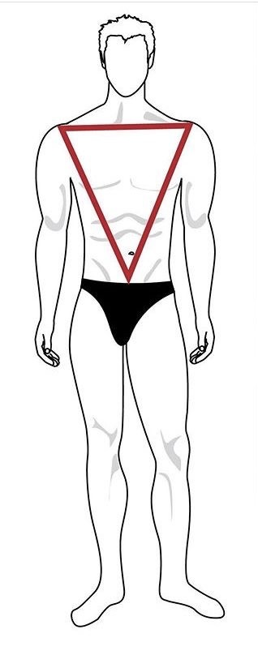
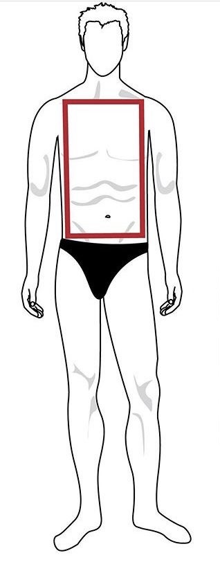
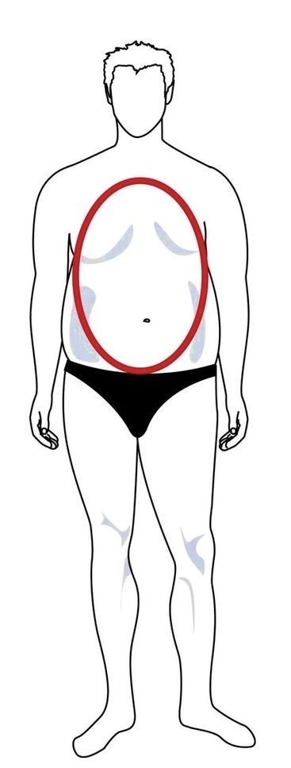

여름 속에서 느껴지는 마음의 안정과 편안함을 그렸습니다. 블루브릭과 함께 새로운 여름 물결을 만나보세요.
BODY STYLE
WOMEN

역삼각형(내추럴 타입)
# 뼈와 골격이 크고 단단함 # 넓은 어깨 # 좁은 힙 # 가는 다리 #상체 발달로 남성적인 느낌# 하체에 볼륨 / 상의는 심플한 라인
추천 재질 : 단단한 조직감의 재질(니트, 가죽 등..)
추천 상의 : 두툼한 가디건, 루즈핏, 오버핏
추천 하의 : 와이드팬츠, A라인 롱스커트
추천 룩 : 캐주얼한 룩
내추럴 타입 연예인 : 대다수 모델, 카즈하, 한예슬, 리사, 한소희, 정려원

삼각형(웨이브 타입)
# 가슴보다 힙이 큼 # 쳐지고 좁은 어깨 #긴 허리 # 굵은 허벅지 # 여리여리한 느낌# 엉덩이 감추고 상반신에 볼륨 #몸의 곡선 살리기
추천 재질 : 가벼운 원단(레이스, 쉬폰원단)
추천 상의 : 퍼프소매 옷, 크롭니트, 크롭티
추천 하의 : 하이웨스트팬츠, 세미 와이드팬츠, 쉬폰스커트, 플레어스커트
추천 룩 : 허리 라인 강조해주는 룩(상의-짧게, 하의-길게)
웨이브 타입 연예인 : 손예진, 윤아, 윈터, 서현, 강민경, 서현진

직사각형(스트레이트 타입)
# 어꺠, 허리, 엉덩이 넓이 거의 같은 일직선 체형 # 글래머러스하고 탄력있는 느낌# 힙,하체에 볼륨 / 가슴에 디테일
추천 재질 : 여름(실크,모달,린넨) / 겨울(울, 개시미어 등)
추천 상의 : 브이넥이나 유넥, 단일무늬 패턴
추천 하의 : 일자바지, 스키니, 슬랙스, H 스커트
추천 룩 : 심플하고 깔끔한 룩
스트레이트 타입 연예인 : 김혜수, 신민아, 송혜교, 안유진, 지수, 민니

모래시계형
# 어깨와 힙 사이즈 비슷하고 큼 # 상대적으로 가는 허리 # 바디 라인이 매력적인 체형# 곡선 몸매 / 가는 허리 강조
추천 재질 : 단단한 조직감의 재질(니트, 가죽 등..)
추천 상의 : 오프숄더, 스퀘어넥,깊은 V넥 수트 셋업, 자켓
추천 하의 : 부츠컷 청바지, 몸매 라인이 드러나는 원피스, H,A라인 원피스
추천 룩 : 허리 라인 강조, 핏한 룩
내추럴 타입 연예인 : 가비, 이하늬, 카리나
MEN

역삼각형(내추럴 타입)
# 넓은 어깨 # 상체 발달 # 이상적 체형 # 대부분의 스타일 소화# 오버핏, 길고 루즈한 핏 추천
추천 재질 : 단단한 조직감의 재질(니트, 가죽 등..)
추천 상의 : 두툼한 가디건, 얇은 니트, 벨트형 재킷/코트, 조끼
추천 하의 : 와이드팬츠, A라인 롱스커트
추천 룩 : 캐주얼룩, 롱, 루즈핏, 와이드핏
내추럴 타입 연예인 : 공유, 차승원, 김우빈

직사각형(스트레이트 타입)
# 전체적으로 슬림한 직선형 #어깨, 가슴, 허리 차이 적음 # 목 굵은 편 # 외소해보일 수 있음# 두상 작게 / 어깨 볼륨 주고 허리 가늘게 보이게 하기
추천 재질 : 두껍지 않은 소재, 고급스러운 소재(울, 캐시미어)
추천 상의 : 셔츠,수트(단추 풀기), 브이넥 가디건, 칼라가 있는 셔츠/티셔츠
추천 하의 : 정핏의 깔끔하고 심플한 디자인
추천 룩 : 댄디룩, 심플, 정핏, 클래식 룩
스트레이트 타입 연예인 : 이병헌, 송승헌, 권상우

오벌형
# 통통한 체형 # 처진 어깨 # 두꺼운 허리# 세로로 길고 가는 직선적 형태 권장
추천 재질 : 부드럽고 편안한 소재(면, 린넨, 비스코스)
추천 상의 : 길고 루즈한 재킷/티져츠, 스트라이프 재킷,셔츠,수트, 오버사이즈 니트
추천 하의 : 스트레이트팬츠, 와이드팬츠
추천 룩 : 루즈핏, 오버핏, 캐주얼룩, 스포티한 룩
오벌형 체형 연예인 : 정형돈, 박명수, 허각